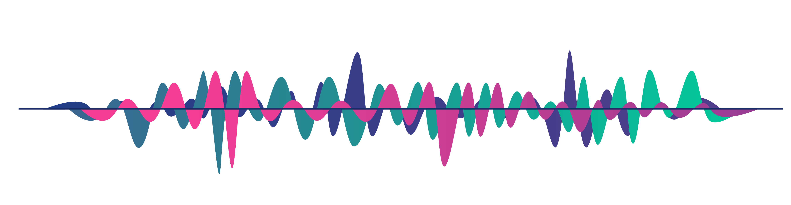

Sound Archive
| Domain Knowledge |
With the ubiquity of mobile technology and cloud storage, many of us have amassed huge digital photo archives documenting personal moments both meaningful and mundane. Yet these digital archives are oddly silent: You might have hundreds of photos of your dog, but to hear her bark you must conjure it from memory. How might developing a sonic archive, focused on personally relevant everyday sounds, reinvent our relationships with sound and encourage everyday sonic thinking? |
| Description |
For more information, see the GitHub repository This project is a semester-long project with three other students at Whitman College. We worked to design a personal sound archive that manages the data and metadata associated with sounds, organizing sounds, providing ways for users to browse and listen to sounds, adding/contribute new sounds to archive, modify, and save sounds. It uses Python and SQLight for the functionality and includes a custom-built GUI. This project has been implemented using the agile scrum team collaboration framework, and we produced three releases. In the first, we implemented the initial prototype, with storage, playback, and basic .wav file editing features. In the second, we implemented a more nuanced database using SQLight to store sounds and metadata. In this release, we also implemented editing features to crop sounds, apply transpose effects, save user's playback options as new sounds, and prototyped a manual low/high-pass filter. In current working release, we implemented the GUI using kivy. This afforded more complex and precise interactions for users such as pause/playback capabilities, fast-forward, and effect/sound searching. |